1. What is the IUPAC name for CH3CHClCH(CH3)CH2CH2CH2CH2Br? A) 1-bromo-6-chloro-5-methylheptane B) 7-bromo-2-chloro-3-methylheptane C) 1-bromo-6-chloro-5,6-dimethylhexane D) 6-bromo-1-chloro-1,2-dimethylhexane
2. What is the IUPAC name for (CH3)3CCH(OH)CH2CH(OH)CH2CH(CH3)2? A) 1,1,1,6-tetramethyl-2,4-heptanediol B) 2,2,7-trimethyl-3,5-octanediol C) 2,2,6,6-tetramethyl-3,5-heptanediol D) 2,7,7-trimethyl-4,6-octanediol
3 What is a correct name for the following compound?
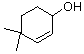
4 Which of the following is a chiral C5H12O 1º-alcohol? A) 3-methyl-2-butanol B) 2-methyl-2-butanol C) 3-methyl-1-butanol D) 2-methyl-1-butanol
5 Which of the following reagents would you expect to react with bromocyclopentane by an SN2 mechanism? A) C2H5OH B) C2H5O(-) K(+) C) NaCN D) (CH3)3N
6 Chloroethane, C2H5Cl, does not react with methanol under mild conditions. What reagent could be added to the reaction mixture to increase the rate of substitution.? A) HCl (conc.) B) NaOH C) NH4OH D) AgNO3
7 Which of the following compounds is unlikely to react with sodium metal? A) C2H5OC2H5 B) C2H5OH C) C2H5Br D) C2H5NH2
8 The reaction of sodium ethoxide with iodoethane to form diethyl ether is classified as ... A) an electrophilic substitution B) a nucleophilic substitution C) a radical substitution D) an electrophilic addition
9 Compound X reacts with HI. The product of this reaction, when treated with KOH in ethanol, gives Y ( an isomer of X ). Ozonolysis of Y (H2O2 workup) produces two compounds: a two carbon carboxylic acid, and a four carbon ketone. What is X? A) 2-methyl-2-pentene B) 4-methyl-1-pentene C) 2,3-dimethyl-2-butene D) 3-methyl-1-pentene
10 The SN2 reaction of 1-chloro-3-methylbutane with sodium methoxide is relatively slow, but can be accelerated by the addition of a small amount of NaI. How is this catalysis best explained? A) The sodium cation helps pull off the chloride anion B) The iodide anion activates the methoxide nucleophile C) SN2 reaction of iodide ion converts the alkyl chloride to the more reactive alkyl iodide D) The NaI changes the mechanism to SN1
11 Which one of the following alcohols will be oxidized by Jones' reagent (CrO3 in 50% sulphuric acid) to a ketone having the same number of carbon atoms ? A) 1-methylcyclohexanol B) 3,3-dimethylcyclopentanol C) 3-methyl-1-hexanol D) 3-ethyl-3-hexanol
12 What reagent would be suitable for distiguishing 1-methoxy-3-methyl-2-butene from its isomer 4-methyl-3-penten-1-ol? A) bromine in methylene chloride B) KMnO4 in aqueous base C) AgNO3 in dilute NH4OH D) sodium metal suspended in hexane
13 Synthesis of hexane-3,4-diol from trans-3-hexene may be accomplished in two ways: (i) OsO4 hydroxylation & (ii) C6H5CO3H epoxidation followed by NaOH opening of the epoxide ring. Which of the following statements about the products from these reactions is correct? A) the two methods giive the same product B) (i) gives a chiral isomer, (ii) gives an achiral isomer C) (i) gives an achiral isomer, (ii) gives a chiral isomer D) two different isomers are formed, but both are chiral
14 Reaction of 1,4-dibromobutane with Mg turnings in ether gives the bis-Grignard reagent, BrMgCH2CH2CH2CH2MgBr. What is the product from the reaction of meso-2,3-dibromobutane with Mg under the same conditions? A) trans-2-butene B) cis-2-butene C) meso-CH3CH(MgBr)CH(MgBr)CH3 D) racemic-CH3CH(MgBr)CH(MgBr)CH3
15 Which reagent(s) would best accomplish the following transformation?
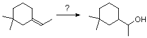
16 Which of the following reagents would not effect the following transformation?
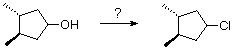
17 What will be the chief product from the following reaction sequence?
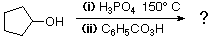
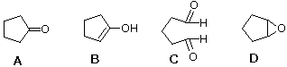
18 I OH(-) II CH3CO2(-) III HO2(-) IV H2O The above molecules and ions are all nucleophiles. What is the relative order of their reactivity in an SN2 reaction with ethyl bromide? A) I > II > III > IV B) IV> III > II > I C) III > I > II > IV D) II > III > IV > I
19 In the SN2 reaction of cyanide ion with (CH3)2CHCH2CH2X what is the relative order of reactivity for the following X substituents? I X = F II X = Cl III X = Br IV X = I A) I > II > III > IV B) IV> III > II > I C) III > I > II > IV D) II > III > IV > I
20 Which of the following does not convert a 1º-hydroxyl group into a good leaving group for a SN2 reaction? A) SOCl2 B) CH3SO2Cl C) PBr3 D) NaI
21 How is the following reaction best classified? (CH3)3CBr + (CH3CH2)3N -----> (CH3)2C=CH2 + (CH3CH2)3NH(+) Br(-) A) SN2 substitution B) E2 elimination C) electrophilic addition D) cationic rearrangement
22 Which of the following isomeric chlorides will undergo SN2 substitution most resdily? A) 4-chloro-1-butene B) 1-chloro-1-butene (cis or trans) C) 1-chloro-2-butene (cis or trans) D) 2-chloro-1-butene
23 Which reagent would be best for achieving an E2 elimination of 3-chloropentane? A) C2H5ONa B) CH3CO2Na C) NaHCO3 D) NaI
24 Which reaction conditions would be best for the synthesis of isobutyl sec-butyl ether CH3CH2CH(CH3)-O-CH2CH(CH3)2 ? A) (CH3)2CHCH2OH + H2SO4 + heat B) CH3CH2CH(CH3)OH + H2SO4 + heat C) CH3CH2CH(CH3)ONa + (CH3)2CHCH2Br D) (CH3)2CHCH2ONa + CH3CH2CH(CH3)Br
25 A chiral C5H10O ether reacts with hot HI to give a C5H10I 2 product Theatment of this with hot KOH in ethanol produces 1,3-pentadiene. What is the structure of the original ether?
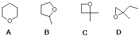
26 A C7H13Br compound reacts with KOH in ethanol to form 3-methylcyclohexene as the major product.What is a likely structure for the starting alkyl bromide? A) cis-4-methylcyclohexyl bromide B) trans-3-methylcyclohexyl bromide C) cis-2-methylcyclohexyl bromide D) trans-2-methylcyclohexyl bromide
27 A synthesis of 2,5-dimethyl-2-hexanol from 2-methylpropene requires the formation of two four-carbon intermediates, X and Y. These intermediates combine to give the desired product after the usual hydrolysis work-up. Select appropriate methods of preparing X and Y from 2-methylpropene A) X add HBr, then react with Mg in ether Y add water, acid-catalysis B) X add HBr (peroxides), then react with Mg in ether Y react with C6H5CO3H in CH2Cl2 C) X add HOBr Y add B2H6in ether, then NaOH D) X add HOBr Y add HBr (peroxides) ,then react with Mg in ether
28 All of the following alkyl bromides react by SN2 substitution when treated with sodium cyanide in methanol. Which one does not undergo an inversion of configuration? A) (R)-1-bromo-2-methylbutane B) (S)-2-bromo-3-methylbutane C) (R)-1-bromo-3,3-dimethylcyclohexane D) cis-4-ethyl-1-bromocyclohexane
29 The structures of two 3º-bicyclic chlorides (I and II) are shown below.
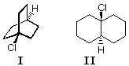
30 Reaction of (R)-2-chloro-4-methylpentane with excess NaI in acetone gives racemic 2-iodo-4-methylpentane How can this be explained? A) the reaction mechanism changes to SN1 B) the reaction proceeds via a rapidly inverting radical intermediate C) the substitution is SN2, but repeated attack by iodide anion (with inversion) leads to racemization D) iodide anion preferentially attacks chlorine, giving a rapidly inverting carbanion intermediate
31 Azide anion is a very good nucleophile. Predict the major product from the following reaction.
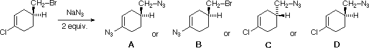
32 What is the chief product from the following reaction?
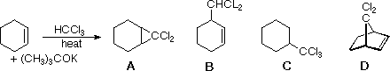
33 Consider the SN1 solvolysis of the following 1º-alkyl chlorides in aqueous ethanol. I CH3CH2CH2Cl II CH2=CHCH2Cl III CH3OCH2Cl IV CF3CF2CH2Cl What is the order of decreasing reactivity? A) III > II > I > IV B) II > I > III > IV C) IV > III > II > I D) I > II > III > IV
34 In the SN2 reaction of iodide ion with (CH3)2CHCH2CH2X what is the order of decreasing reactivity for the following X substituents? I X = -OH II X = CH3CO2- III X = CF3SO3- IV X = CCl3CO2- A) I > II > III > IV B) IV > III > II > I C) III > II > IV > I D) III > IV > II > I
35 A C6H14O chiral alcohol is converted to a bromide by treatment with PBr3. Reaction of this bromide, first with Mg in ether, followed by quenching in 0.1 N HCl produces an achiral C6H14 hydrocarbon. Which of the following is the original alcohol.? A) 2-ethyl-1-butanol. B) 4-methyl-1-pentanol. C) 3-methyl-3-pentanol. D) 3-methyl-1-pentanol.
36 Which of the following reaction sequences would best serve to convert 2-methyl-1-bromopropane to 4-methyl-1-iodopentane? A) (i) Mg in ether; .(ii) ethylene oxide (C2H4O); (iii) HI & heat B) (i) NaC≡CH in ether; .(ii) H2 + Lindlar catalyst; (iii) HI C) (i) KOH in alcohol; . (ii) C6H5CO3H in CH2Cl2; (iii) NaC≡CH in ether ; (iv) 2 H2 + Pt catalyst D) (i) NaC≡CH in ether; .(ii) H3O+ + HgSO4; (iii) HI & heat
37 Which of the following organic halides will undergo an E2 elimination on heating with KOH in alcohol? A) 2,2-dimethyl-1-bromopropane B) 2,2-dimethyl-1-bromocyclohexane C) benzyl chloride (C6H5CH2Cl) D) 2,5-dimethyl-1-bromobenzene
38 A chiral C7H16O2 diol is oxidized by PCC in CH2Cl2 to an achiral C7H12O2 compound. Which of the following would satisfy these facts?
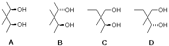
39 What is the product from the acid catalyzed addition of methanol to 2,2-diethyloxirane? A) 3,3-dimethoxypentane B) 2-ethyl-1-methoxy-1-butanol C) 2-ethyl-1-methoxy-2-butanol D) 2-ethyl-2-methoxy-1-butanol
40 Which of the following is the product from ethanol addition to dihydropyran (shown on the left below)?
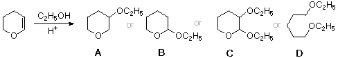
41 What product(s) are expected from the following reaction?
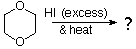
42 Which of the following is the most likely product of this Diels-Alder reaction?
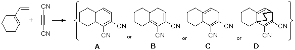
43 Reaction of 1,1-dibromopentane with three equivalents of NaNH2 in ether is followed by treatment with 0.1M HCl at 0º C. What is the product? A) cyclopentene. B) 1,2-pentadiene. C) 2-pentyne. D) 1-pentyne.
44 Which of the following reagents and conditions would best serve to convert 1-butyne to 1-bromo-1-butene? A) 1 equivalent of HBr, no peroxides. B) 1 equivalent of HBr, with peroxides. C) 1 equivalent of Br2, followed by 1 equivalent of KOH. D) 2 equivalents of HBr, followed by 1 equivalent of KOH.
45 Which of the following reagents would be best for oxidizing a 1º-alcohol to an aldehyde? A) H3PO4 B) PCC in CH2Cl2 C) Jones' reagent (H2CrO4) D) OsO4
46 If the rate of reaction of [0.1 M] sodium cyanide with [0.1M] 1-bromoethane is 1.4 x 10-4,what effect will an increase in NaCN concentration to [0.3] and alkyl bromide concentration to [0.2] have on the overall reaction rate? A) increase by 2 times B) increase by 3 times C) iincrease by 6 times D) increase by 1.5 times
47 A chiral C5H10O alcohol is reduced by catalytic hydrogenation to an achiral C5H12O alcohol. The original alcohol is oxidized by activated MnO2 to an achiral carbonyl compound (C5H8O) Which of the following might be the chiral alcohol? A) 1-penten-3-ol B) 4-penten-2-ol C) 3-methyl-2-buten-1-ol D) 2-methyl-2-buten-1-ol
48 A water soluble C6H14O2 compound is oxidized by lead tetraacetate (or periodic acid) to a single C3H6O carbonyl compound. Which of the following would satisfy this fact? A) meso-2,3-dimethoxybutane B) 1,2-diethoxyethane C) meso-2,5-hexanediol D) meso-3,4-hexanediol
49 Which of the following is the most likely product from the reaction illustrated by the curved arrows in the formula on the left?
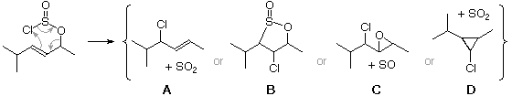
50 Which of the following ethers is unlikely to be cleaved by hot conc. HBr?
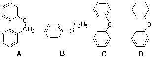
51 What reagents and conditions are used for the Simmons-Smith reaction? A) CH3I + Mg in ether B) CH2I2 + Zn (Cu) in ether C) BrCH2CH2Br + Zn in ether D) CBr4 + Zn (Cu) in ether
52 The Lucas test is used to distinguish small (7 or fewer carbons) 1º, 2º and 3º -alcohols. The alcohol to be tested is added to a solution of anhydrous ZnCl2 in conc. HCl at room temperature. Which of the following statements is not correct? A) 1º-alcohols dissolve, but do not react B) 3º-alcohols react quickly to give an insoluble alkyl chloride C) 3º-alcohols rapidly dehydrate, and the gaseous alkene bubbles out of the test solution D) 2º-alcohols dissolve and react slowly to give an insoluble alkyl chloride
53 A C6H12O compound does not react with Br2 in CCl4, produces a flammable gas on treatment with LiAlH4, and reacts with H2CrO4 changing the color from orange to green Which of the following compounds best agrees with these facts? A) 1-methylcyclopentanol B) methoxycyclopentane C) 2-cyclopropyl-2-propanol D) 2-cyclobutylethanol
54 Stereoisomers I and II undergo E2 elimination on treatment with sodium ethoxide in ethanol. One isomer reacts 500 times faster than the other. Also, one isomer gives X as the only product, whereas the other gives Y together with some X Which of the following statements provides the best assignment of I and II?
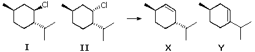